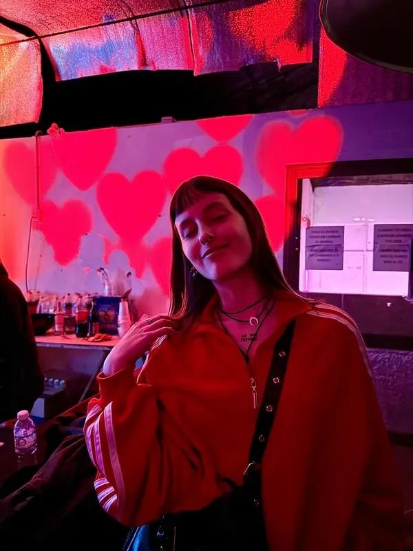
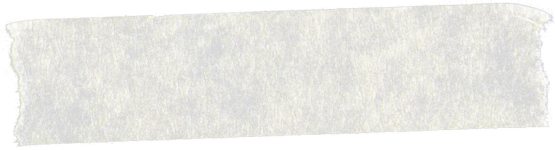

¿hubieses puesto en mi boca
la flor que nació en la tuya
cuando te pedí que te quedaras?
Fragmento de un poema de Aunque la poesía no lo entienda (2025)
mi historia y las versiones que han ido naciendo de ella. infancia, libros, experiencias, aulas, mudanzas, lecturas, recuerdos, tiempos, urgencias, preguntas, vínculos, lugares, intuiciones, pasiones, hechos, felicidad, dolores, elecciones, dudas, obsesiones, temores.
Nací el 7 de noviembre de 1995.
Mis primeros maestros del amor, del cuidado y de la paciencia fueron mis padres.
A los cuatro años, ocurrieron dos acontecimientos relevantísimos para mi mundo: nació mi hermano y aprendí a leer y a escribir.
Después, le sucedieron los libros que recibía como regalo, la fascinación por las revistas, las cartitas de amor y de amistad, las tardes perpetuas en el campo con mis primos, las ganas de volver de la escuela para hacer la tarea y el asombro de descubrir el exorbitante poder de la palabra.
En la preadolescencia empecé a escribir mis primeros poemas sobre amores y desamores, sobre la casa del campo y los primeros miedos a la muerte.
Más tarde, estudié y enseñé danza, me mudé de mi pueblo para estudiar Lengua y Literatura, comencé a trabajar como docente, a coordinar proyectos literarios, a asistir a talleres de escritura y a participar en antologías, poéticas en su mayoría.
En la sucesión de estos treinta años, continué abriendo muchas puertas formativas: fotografía, escritura creativa, corrección, tarot, marketing, terapias artísticas, etc., etc., etc.
Desde siempre estoy rodeada de libros, estoy enseñando o estudiando, compartiendo el placer de la literatura y persiguiendo la poesía de las cosas.


Gracias por recorrer una habitación de mi casa poética.